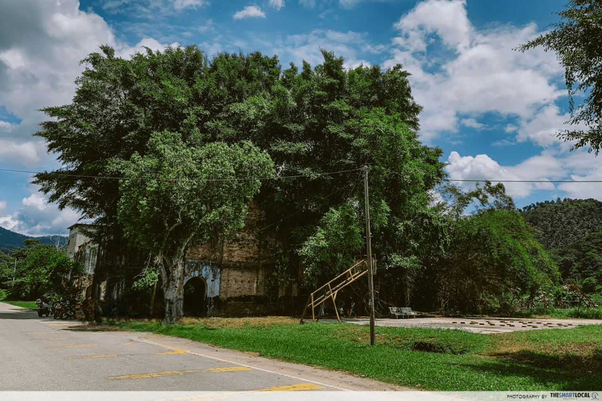

HERITAGE IN KAMPUNG PAPAN, PERAK
LONG FORGOTTEN, PRE-WAR SHOPHOUSES
The word “post-apocalyptic” might come to mind when you arrive in Papan. Not unlike the Straits Eclectic-style shophouses in George Town and Kuala Lumpur, there are at least 30 shophouses to be discovered in the quiet town which comprises a single Main Street lined with these structures, and a couple of diverting alleys leading to timber houses. However, most of the pre-war buildings here are missing doors and windows. Not to mention, many of their roofs are crowned with lush foliage, signalling an absence of occupants.
A stroll through the town might have you wondering what secrets the gutted, uninhabited buildings hold. But there are a sign on a shophouse facade warning curious visitors of falling objects within a likely occurrence due to the building dilapidated state. So, venture inside the shophouses if you dare, but know that this isnt recommended. Those who have entered its depths have seen remnants of a barbershop, school, and kitchen inside three separate shophouses.

While the deteriorated shophouses may seem vacated, a few are actually still occupied today. Parked cars and well-tended plants at doorways show signs of life within a couple of the aged lots. According to a South China Morning Post report, there are less than 300 residents currently residing in Papan. A total of 31 mostly elderly residents occupy 10 old shophouses along Main Street, while 200 others live in the vicinity of the shophouses in the timber houses.
FORMER CLINIC, MANDAILING PALACE AND TRADITIONAL MOSQUE
Nestled between the pre-war shophouses is an especially notable one once belonging to the local war hero Sybil Kathigasu, known as Lot No 74. She was a nurse who operated a clinic in the building to aid the Malayan Peoples Anti-Japanese Army during World War II. Together with her husband, Dr Abdon, they treated the resistance guerrilla fighters here. It is believed that the fighters also made Papan their hideout during war time due to its forested surroundings. Imprisoned and tortured for her role in the war, Sybil was the only Malayan woman to receive the second-highest British George Medal for civilian courage. Today, her clinic stands as a memorial to her efforts, with newspaper clippings about her pinned to its facade.

Just a stones throw away from Papan Main Street are two other historic buildings which are Istana Raja Billah and Kampung Papan Mosque. Though you not able to enter these structures, they are still magnificent to behold from outside.
A mosque was also built in the area by the Mandailings, and is considered one of the oldest mosques in the state. Unlike other traditional mosques with a minaret and dome, Kampung Papan Mosque features a tiered roof and stilts. Due to its mysterious exterior and likely the filming of a 2011 horror film at the mansion called Penunggu Istana which is a sign on its facade warns visitors like shaman (bomoh) and charmers (pawang dana) not to enter the historic mosque.